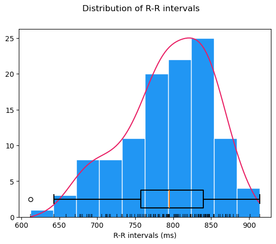
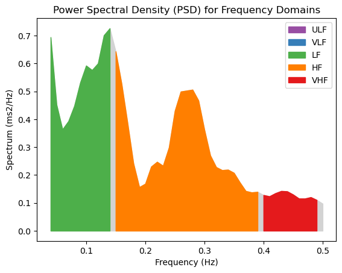
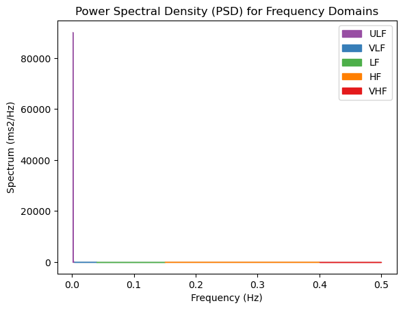
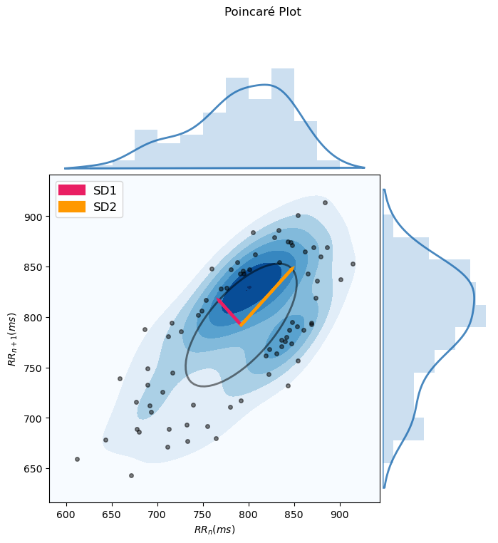
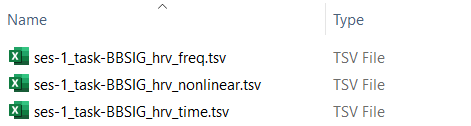

Heart Rate Variability (HRV) analysis: hrv_analysis.ipynb#
This step-by-step tutorial will walk you through how to use the Jupyter notebook for conducting Heart Rate Variability (HRV) analysis on your preprocessed ECG or PPG data, developed as part of the Brain-Body Analysis Special Interest Group (BBSIG). You can find this pipeline under the name: hrv_analysis.ipynb.
Never used a Jupyter notebook before?
If you have never used a Jupyter notebook before, visit our setup instructions in the FAQs. If you are planning to perform manual PPG peak correction, we recommend following the instructions to run this pipeline locally in your IDE of choice (e.g., VS Code, PyCharm).
Compatible data sources#
This HRV analysis pipeline is designed for optimal interaction with RR interval time series derived from preprocessed ECG/PPG data using our BBSIG pipelines. For minimal setup, we recommend running the ecg_preproc.ipynb or ppg_preproc.ipynb notebook beforehand, which will generate the preprocessed ECG/PPG output files in BIDS-compliant format. However, if you have acquired your own RR interval data, the HRV analysis pipeline will work with custom TSV/CSV/TXT files, as long as they meet a few formatting requirements.
Select the tab below based on your data source for RR intervals:
If you have correctly run the ecg_preproc.ipynb or ppg_preproc.ipynb pipeline, the preprocessed ECG/PPG output files for each participant will be stored under derivatives/ecg-preproc/sub-<label>/ or derivatives/ppg-preproc/sub-<label>/. Each participant should have a corresponding _ecg-preproc.json or _ppg-preproc.json file containing the RR interval time series.
To ensure proper data loading, the following parameters must be specified in the Additional Settings section at the beginning of the notebook:
bbsig_preproc = Truein order to import the JSON files generated during the BBSIG-based preprocessing.rri_unit = 's'(as the BBSIG pipeline natively saves RR intervals in seconds).physio_type = 'ecg'/'ppg', depending on the peripheral physiological modality of your raw data.rr_type = 'manualcorr'/'autocorr'/'uncorr', determines which type of RR interval data to extract from the R-peak correction steps.
Example setup to import ECG data preprocessed using the BBSIG pipeline:
### Specify whether the data is BBSIG preprocessed output or custom file ###
# Define whether the preprocessed ECG/PPG data were generated using the BBSIG pipeline
bbsig_preproc = True # set to True if data from the 'ecg-preproc' or 'ppg-preproc' folder is used
rri_unit = 's' # RR interval unit; 's' for seconds, 'ms' for milliseconds
# Parameters for `bbsig_preproc = True`: BBSIG-compatible preprocessed file
if bbsig_preproc:
physio_type = 'ecg' # specify the type of physiological data ('ecg', 'ppg') if bbsig_preproc was used
rr_type = 'autocorr' # specify the type of RR interval data to extract (either 'manualcorr', 'autocorr', or 'uncorr')
If you have your own RR interval data which was not derived from a BBSIG preprocessing pipeline, you can still use the current pipeline with a custom file. Just follow these formatting and data storage requirements:
- Store the RR interval time series in a single column, one value per row. The column may or may not have a header row.
- Save such formatted RR intervals as a separate TSV/CSV/TXT file for each participant using the following BIDS-compliant file naming standards:
sub-<label>[_ses-<label>]_task-<label>_rr.{tsv/csv/txt}. It is important to use the suffix_rr.{tsv/csv/txt}with the correct file extension. - Organize these custom files under the participant-specific
derivatives\sub-<label>\[ses-<label>\]<datatype>\directories.
Here is an example of a directory storing a custom _rr.tsv file with RR intervals:
└─ YourBIDSFolder/
├─ derivatives/
│ └─ sub-101/
│ └─ ses-01/
│ └─ beh/
│ └─ `sub-101_ses-01_task-BBSIG_rr.tsv` # custom TSV file with RR interval time series
└─ ...
To ensure proper data loading, the following parameters must be specified in the Additional Settings section at the beginning of the notebook:
bbsig_preproc = Falsein order to import the custom file with the RR interval time series.rri_unit = 's'/'ms', depending on whether your original RR interval values are expressed in seconds or milliseconds.file_type = 'tsv'/'csv'/'txt'to match the file extension.file_headercan be set toNoneif no header is present; otherwise, defaults to0, i.e., the first row.column_rrcan be set to the column index containing the RR interval time series (if you have only one column, this will correspond tocolumn_rr=0, i.e., the first column).
Example of a custom TSV file with one column storing RR intervals (in seconds), without a header:
0.948
0.925
0.902
0.876
0.847
Example setup to import this custom TSV file, without a header and with only one colum:
### Specify whether the data is BBSIG preprocessed output or custom file ###
# Define whether the preprocessed ECG/PPG data were generated using the BBSIG pipeline
bbsig_preproc = False # set to True if data from the 'ecg-preproc' or 'ppg-preproc' folder is used
rri_unit = 's' # RR interval unit; 's' for seconds, 'ms' for milliseconds
[...]
# Parameters for `bbsig_preproc = False`: custom file
if not bbsig_preproc:
file_type = 'tsv' # specify the file type ('tsv', 'csv', 'txt') for loading data
file_header = None # set to None if no header, otherwise 0 if header is first row (0-based)
column_rr = 0 # specify the column index (0-based) for RR intervals
Notebook structure#
This notebook contains the following sections which define functions for use in the main analysis loop of the HRV preprocessing pipeline:
-
Data import and conversion: import and format the RR interval time series either from the BBSIG-preprocessed JSON files (
_ecg-preproc.jsonorppg-preproc.json) or from custom TSV/CSV/TXT files (_rr.{tsv/csv/txt}). Convert them to milliseconds (if needed) and compute the corresponding R-peak timestamps, stored in therrs_dictdictionary for later processing stages. -
(Optional) Data cropping: crop the RR interval data to a specific time window using the custom function
hrv_window_crop(). This specifies a temporal window (e.g., a 5-min block) for analysis based on a start time and either an end time or a duration (all in seconds). The cropped RR intervals and R-peak timestamps are then stored in a new dictionary:cropped_rrs_dict. -
(Optional) Compute time-domain HRV metrics: compute time-domain HRV metrics using the custom function
hrv_time_domain()(based on NeuroKit2'shrv_time()) in order to extract various data (such as mean and median RR, mean and median HR, SDNN, RMSSD, and pNN50) and store them in a dictionary. Will also display a summary plot of time-domain HRV metrics ifshow_plots=True. -
(Optional) Compute frequency-domain HRV metrics: compute frequency-domain HRV metrics using the custom function
hrv_frequency_domain()(based on NeuroKit2'shrv_frequency()) in order to extract spectral features (like VLF, LF, HF, LF/HF, LFn, HFn, and LnHF) and store them in a dictionary. Will also display a summary plot of frequency-domain HRV metrics ifshow_plots=True. -
(Optional) Compute non-linear HRV metrics: compute non-linear HRV metrics using the custom function
hrv_nonlinear()(based on NeuroKit2'shrv_nonlinear()) in order to extract various features (like Poincaré plot SD1, SD2, SD1/SD2, ApEn and SampEn) and store them in a dictionary. Will also display a summary plot of non-linear HRV metrics ifshow_plots=True. -
Data output: save all participants' computed HRV metrics (time-domain, frequency-domain, or non-linear, if present) to a summary TSV file under
derivatives/hrv-analysis/using the custom functionsave_hrv_data(). The summary TSV files for each HRV metric can be distinguished using the suffix_hrv_{time/freq/nonlinear}.tsv. -
Main Analysis Loop: execute the desired analysis steps from the optional sections above, looping over all participants included in the
participant_idslist at once.
Warning
Sections 1 to 6 only define the optional functions which will be called in the Main analysis loop. For any of these optional steps to be applied, the corresponding variable must be set to True in the settings below.
Want to know more about the HRV metrics computed by NeuroKit2?
The NeuroKit2 creators have published a open-access paper (Pham et al., 2021) detailing the most commonly used HRV indices (time-domain, frequency-domain, non-linear) and how to use them in different research areas. The paper also includes a tutorial on how to compute these HRV metrics using NeuroKit2.
Settings: optional pipeline steps#
This section defines a series of variables that can be set to True to include the corresponding optional pipeline steps:
Variable Name |
Function |
|---|---|
compute_hrv_time (bool) |
Time-domain HRV computation (Sect. 3): computes time-domain HRV metrics, including the Standard Deviation of NN intervals (SDNN), Root Mean Square of Successive Differences (RMSSD) and Proportion of NN intervals > 50ms difference (pNN50), using NeuroKit2's hrv_time() function. |
compute_hrv_freq (bool) |
Frequency-domain HRV computation (Sect. 4): computes frequency-domain HRV metrics, such as Low Frequency (LF) and High Frequency (HF) power, Low-to-High Frequency Ratio (LF/HF), using NeuroKit2's hrv_frequency() function with default method 'Welch' and interpolation rate set to interpolation_freq = 4. |
compute_hrv_nl (bool) |
Non-linear HRV computation (Sect. 5): computes non-linear HRV metrics, such as Poincaré plot SD1, SD2, SD1/SD2, ApEn and SampEn, using NeuroKit2's hrv_nonlinear() function. |
show_plots (bool) |
NeuroKit2 HRV plotting: displays NeuroKit2's built-in plots for each of the above HRV metrics. |
Warning
At least one of the two options compute_hrv_time or compute_hrv_freq must be set to True!
Additional settings#
This section defines a series of settings specific to some pipeline steps, including:
Settings: 1. Data import and conversion#
Define BIDS entities for data path info:
Specify the participant ID(s) in the participant_ids list. The user must specify mandatory (i.e., task <label> in format task-<label>, datatype) and optional (i.e., session <label> in format ses-<label>) BIDS entities, which will be used to create a base filename according to BIDS conventions (e.g., sub-<ID>{_ses-<label>}_task-<label>) and a base BIDS directory including subject, session (optional) and datatype (e.g., 'sub-<ID>/{ses-<label>}/<datatype>/').
Specify whether using BBSIG or custom preprocessed data:
If the raw ECG/PPG data was preprocessed using a BBSIG pipeline, bbsig_preproc must be set to True. During data import, the BSSIG-related preprocessed JSON files from the corresponding derivatives\{physio_type}-preproc\ folder will be loaded. The user has to specify the type of physiological data on which preprocessing was performed (i.e., physio_type = 'ecg' or physio_type = 'ppg') and the type of RR interval data to extract, depending on the correction method used (i.e., rr_type set to either 'manualcorr', 'autocorr', or 'uncorr'). For more details, see the "BBSIG Preprocessed Data" tab.
If the BBSIG pipelines were not used for preprocessing, bbsig_preproc must be set to False. During data import, a custom file containing RR intervals (either in seconds or milliseconds) for each participant will be loaded. The custom file should either be a TSV, CSV or TXT file, including at least one column with the RR interval time series, either with or without a header. The custom files for each participant should follow a BIDS-compliant naming scheme with the suffix _rr.{tsv/csv/txt}, and should be stored within the derivatives\sub-<label>\[ses-<label>]\<datatype>\ directory. The user must specify the time units of the RR intervals (i.e., rri_unit = 's' or rri_unit = 'ms'), the type of custom file to load (i.e., file_type set to 'tsv', 'csv', or 'txt'), the header row index (if present, file_header; 0-indexed) and the column index containing the RR intervals (i.e., column_rr; 0-indexed). For more details, see the "Custom RR intervals file" tab.
Settings: 2. (Optional) Data cropping#
If crop_window is set to True, the user must specify parameters for cropping a window from the original RR interval time series. It is necessary to specify the start time of the window (window_start_hrv), in addition to either the end time (window_end_hrv) or the cumulative duration (window_length_hrv), all in seconds. Whichever of the latter is not specified (either window_end_hrv or window_length_hrv) must be set to None.
If enabled, metadata regarding the chosen window start and end timepoints will be saved in a new cropped_rrs_dict for each participant.
Here is an example setup for cropping a window spanning from 0 to 90 seconds in the original data - subsequent HRV analysis will only be performed on this window:
###### Settings: 2. (Optional) Data cropping ######
# Define whether cropping of a window of specified duration or start/end time is needed
crop_window = True # set to True if needed
# Specify the parameters below if crop_window is set to True
# one out of window_end_hrv and window_length_hrv has to be specified, the other can be set to None
if crop_window:
window_start_hrv = 0 # mandatory: start of window for HRV analysis (in seconds)
window_end_hrv = 90 # optional: end of window for HRV analysis (in seconds), otherwise set to None
window_length_hrv = None # window length for HRV analysis (in seconds), otherwise set to None
Settings: 4. Frequency-domain HRV settings#
If compute_hrv_freq is set to True, the user can specify the sampling frequency for interpolating RR intervals for frequency-domain HRV analysis. Defaults to 4 Hz, i.e., interpolation_freq = 4.
####### Settings: 4. Frequency-domain HRV settings #######
# Specify the parameters below if compute_hrv_freq is set to True
if compute_hrv_freq:
interpolation_freq = 4 # sampling frequency for interpolating RR intervals for frequency-domain HRV analysis
1. Data import and conversion#
This section defines the custom function load_rr_data() for importing RR interval time series from either the ECG/PPG data preprocessed using the BBSIG pipelines (bbsig_preproc = True) or a custom TSV/CSV/TXT file (bbsig_preproc = False) for a given participant, and for converting them to the appropriate format for later processing stages (RR intervals in ms, R-peaks as timestamps).
The function supports two data input modes:
- From preprocessed JSON files generated by the BBSIG pipelines (e.g.,
_ecg-preproc.jsonor_ppg-preproc.json) in thederivativesfolder.- Extracts the manual, automatic, or uncorrected R-peak types from the JSON file (as specified by
rr_type).
- Extracts the manual, automatic, or uncorrected R-peak types from the JSON file (as specified by
- From custom TSV/CSV/TXT files containing at least one column with the RR interval time series (
_rr.{tsv/csv/txt}) in thederivativesfolder.- Extracts the RR interval time series from a given column (
column_rr) excluding the header row (file_header), if present.
- Extracts the RR interval time series from a given column (
After loading the RR intervals from either the BBSIG-generated JSON file or the custom file, the function:
- Converts RR interval values from seconds to milliseconds (if needed)
- Computes R-peak timestamps as the cumulative sum of RR intervals
- Stores a dictionary
rrs_dictcontaining RR intervals in ms (RRI) and R-peak timestamps (RRI_Time), in a format compatible with later NeuroKit2 functions.
Example structure of rrs_dict for one participant:
{
'RRI': array([612., 659., 739., ..., 828., 883., 873.]), # RR intervals in miliseconds
'RRI_Time': array([ 612., 1271., 2010., ..., 597331., 598214., 599087.]) # R-peaks timestamps in seconds
}
2. (Optional) Data cropping#
If crop_window is set to True, this section defines a custom function hrv_window_crop() to crop RR interval data to a specific time window. This is useful for analyzing a subset of an HRV recording (e.g., a 5-min rest block) instead of the entire session. The function extracts a specific segment of RR interval data based on either a start and end time or a start time and a duration (in seconds). The corresponding RR intervals and R-peak timestamps for the cropped window are stored in a new dictionary: cropped_rrs_dict.
Note: one of either window_end or window_length must be specified, while the other must be set to None.
Example of cropped_rrs_dict for one participant using a window from 0 to 90 seconds:
{
'RRI': array([612., 659., 739., ..., 726., 786., 804.]), # RR intervals in miliseconds
'RRI_Time': array([ 612., 1271., 2010., ..., 87910., 88696., 89500.]) # R-peaks timestamps in seconds
}
3. (Optional) Compute time-domain HRV metrics#
If the variable compute_hrv_time is set to True in the optional pipeline steps (see settings above), this section defines the custom function hrv_time_domain() which performs the calculation of time-domain HRV metrics using NeuroKit2's hrv_time() function. The resulting time-domain metrics for the given participant are stored in the hrv_time_metrics dictionary. These metrics include:
MeanRRandMeanBPM: mean RR duration in seconds and mean heart rate (HR) value in beats per minute (BPM)MedianRRandMedianBPM: median RR duration in seconds and median HR value in BPMMinRRandMinBPM: minimum RR duration in seconds and minimum HR in BPMMaxRRandMaxBPM: maximum RR duration in seconds and maximum HR in BPMSDNN: Standard Deviation of NN (normal-to-normal) intervalsSDSD: Standard Deviation of Successive RR interval DifferencesRMSSD: Root Mean Square of Successive DifferencespNN50: Proportion of successive NN intervals that differ more than 50ms (Bigger et al., 1988; Mietus et al., 2002).
For a full list of time-domain HRV metrics which can be added to the dictionary within the custom function, see the NeuroKit2 documentation of hrv_time(). If show_plots is set to True in the optional pipeline steps (see settings above), a plot for the computed time-domain HRV metrics will also be shown.
Example of the hrv_time_metrics dictionary for one participant on the desired cropped window:
{
'subjID': 'sub-101',
'MeanRR': 792.0353982300885,
'MeanBPM': 75.75418994413408,
'MedianRR': 795.0,
'MedianBPM': 75.47169811320755,
'MinRR': 612.0,
'MinBPM': 65.64551422319475,
'MaxRR': 914.0,
'MaxBPM': 98.03921568627452,
'SDNN': 61.34750681910679,
'SDSD': 48.26810047857201,
'RMSSD': 48.08270404804027,
'pnn50': 39.823008849557525,
'window_start': 0,
'window_end': 90
}
Here is an example of how NeuroKit2's built-in distribution plot of RR intervals might look:

4. (Optional) Compute frequency-domain HRV metrics#
If the variable compute_hrv_freq is set to True in the optional pipeline steps (see settings above), this section defines the custom function hrv_frequency_domain() which performs the calculation of frequency-domain HRV metrics using NeuroKit2's hrv_frequency() function with the default method 'Welch' and 4 Hz interpolation (the interpolation rate can be changed by modifying the interpolation_rate variable in the settings above). The resulting frequency-domain metrics for the given participant are stored in the hrv_freq_metrics dictionary. These metrics include:
VLF: Very Low Frequency power (by default, 0.0033 to 0.04 Hz)LF: Low Frequency power (by default, 0.04 to 0.15 Hz)HF: High Frequency power (by default, 0.15 to 0.4 Hz)LF/HF: ratio of Low-to-High Frequency power — often interpreted as a marker of autonomic balanceLFn: normalized Low Frequency power, obtained by dividing the low frequency power by the total powerHFn: normalized High Frequency power, obtained by dividing the high frequency power by the total powerLnHF: natural logarithm of high frequency power
For a full list of frequency-domain HRV metrics which can be added to the dictionary within the custom function, see the NeuroKit2 documentation of hrv_frequency(). If show_plots is set to True in the optional pipeline steps (see settings above), a plot for the computed frequency-domain HRV metrics will also be shown.
Example of the hrv_freq_metrics dictionary for one participant on the desired cropped window:
{
'subjID': 'sub-101',
'VLF': 0.0015943855081253808,
'LF': 6.160565454161458e-09,
'HF': 8.170534133301846e-12,
'LF/HF': 753.9978847957976,
'LFn': 2.6983097056702785e-12,
'HFn': 3.578670126377147e-15,
'LnHF': -25.53048683180052,
'window_start': 0,
'window_end': 90
}
Here is what NeuroKit2's built-in Power Spectral Density (PSD) plot for HRV frequency domains should look like:

Bug with NeuroKit2's hrv_frequency() PSD plot - heavily skewed ULF values
While running the HRV analysis pipeline on RR interval time series of various lengths, including shorter cropped windows (~3 minutes), we encountered a persistent issue with the hrv_frequency() function. According to Neurokit's documentation, spectral power in the Ultra Low Frequency (ULF) band (< 0.003 Hz) should return NaN for short recordings due to insufficient frequency resolution.
However, in our testing, the computed HRV_ULF consistently returned unexpectedly high values, such as:
HRV_ULF HRV_VLF HRV_LF HRV_HF HRV_VHF
2283.118628 0.001594 6.160565e-09 8.170534e-12 4.102655e-14
This leads to a heavily skewed Power Spectral Density (PSD) plot where the ULF component (in purple) dominates the y-axis. Unfortunately, the visualization becomes unusable for interpreting VLF, LF, and HF components, which disappear due to this scaling issue:

We attempted to disable the ULF band (using the setting ulf=None inside the hrv_frequency() function), but this solution did not fix the issue. We are currently planning to work on a parallel PSD visualization, in addition to opening an issue with the maintainers of NeuroKit2.
5. (Optional) Compute non-linear HRV metrics#
If the variable compute_hrv_nl is set to True in the optional pipeline steps (see settings above), this section defines the custom function hrv_nonlinear() which performs the calculation of non-linear HRV metrics using NeuroKit2's hrv_nonlinear() function. The resulting non-linear metrics are stored in the dictionary hrv_ln_metrics, including:
SD1: Poincaré plot standard deviation of the short-term variability component (i.e., the short-axis of ellipse).SD2: Poincaré plot standard deviation of the long-term variability component (i.e., the long-axis of ellipse).SD1/SD2: Poincaré ratio of short-term to long-term variability.S: Poincaré plot area of the ellipse, proportional to SD1/SD2.ApEn: approximate entropy, a measure of regularity and complexity of a time series.SampEn: sample entropy, a more robust version of ApEn.
For a full list of non-linear HRV metrics which can be added to the dictionary within the custom function, see the NeuroKit2 documentation of hrv_nonlinear(). If show_plots is set to True in the optional pipeline steps (see settings above), a plot for the computed non-linear HRV metrics will also be shown.
Example of the hrv_ln_metrics dictionary for one participant using a cropped window of 0 to 90 seconds:
{
'subjID': 'sub-101',
'SD1': 34.130701163391905,
'SD2': 78.32001310664121,
'SD1/SD2': 0.4357851819677206,
'S': 8397.844611437116,
'ApEn': 0.6585571938830488,
'SampEn': 1.508184178728928,
'window_start': 0,
'window_end': 90
}
Here is what NeuroKit2's built-in Poincaré plot for non-linear HRV looks like:

6. Data output#
This section defines a custom function, save_hrv_data(), to save the computed HRV metrics (time-domain, frequency-domain, and non-linear, if enabled) of all participants to a summary TSV file. In detail, this section will:
- Convert the input
hrv_data(a dictionary generated from one of the pipelines steps in Sect. 3, Sect. 4 or Sect. 5) into a DataFrame - Create an output directory in
derivatives/hrv-analysis/, if not already available. - Save the DataFrame as a TSV file named according to the BIDS-compliant
task-<label>and HRV analysis type (time,freq, ornonlinear), e.g.,task-rest_hrv_time.tsv.
7. Main analysis loop#
The optional pipeline steps from the previous sections are executed, as part of the main analysis loop, if and only if they are flagged as enabled in the main loop, which itself will run on every participant included in the participant_ids list.
The main loop will also save the computed HRV metrics as TSV files with one row per participant. Please make sure that all the pipeline steps you wish to execute are set to True in the Settings: optional pipeline steps.  Note that at least one of the two options
Note that at least one of the two options compute_hrv_time or compute_hrv_freq must be True!
Here are all the sub-sections of the main analysis loop:
# initialize empty lists to store HRV metrics
all_hrv_time = []
all_hrv_freq = []
all_hrv_nl = []
# Loop through each participant ID and perform HRV analysis
for subj in participant_ids:
subj_id = 'sub-' + str(subj) # participant ID (in BIDS format)
############## Create base BIDS-compatible filename and directory ##############
# If you have additional BIDS entities (e.g., 'run' or 'recording') you can change the base BIDS file name below
# e.g., f'{subj_id}_ses-{session_idx}_task-{task_name}_run-{run_idx}_recording-{rec_name}'
if session_idx is not None:
bids_base_fname = f'{subj_id}_ses-{session_idx}_task-{task_name}'
bids_base_dir = os.path.join(subj_id, f'ses-{session_idx}', datatype_name) # base BIDS folders incl. session 'sub-<ID>/ses-<label>/<datatype>/'
else:
bids_base_fname = f'{subj_id}_task-{task_name}'
bids_base_dir = os.path.join(subj_id, datatype_name) # base BIDS folders without session 'sub-<ID>/<datatype>/'
############## Sect. 1: Data import of RR intervals ##############
rr = load_rr_data(wd, bids_base_fname, bids_base_dir, rr_type, rri_unit, bbsig_preproc=bbsig_preproc, physio_type=physio_type)
############## Sect. 2: Data cropping ##############
if crop_window:
rr, window_start, window_end = hrv_window_crop(rr, window_start=window_start_hrv, window_end=window_end_hrv, window_length=window_length_hrv)
############## Sect. 3: Computation of time-domain HRV, if required ##############
if compute_hrv_time:
hrv_time_metrics = hrv_time_domain(rr, subj, plot=show_plots)
if crop_window:
hrv_time_metrics['window_start'] = window_start # save metadata about start of cropped window
hrv_time_metrics['window_end'] = window_end # save metadata about end of cropped window
all_hrv_time.append(hrv_time_metrics)
############## Sect. 4: Computation of frequency-domain HRV, if required ##############
if compute_hrv_freq:
hrv_freq_metrics, hrv_f = hrv_frequency_domain(rr, subj, interpolation_freq, plot=show_plots)
if crop_window:
hrv_freq_metrics['window_start'] = window_start # save metadata about start of cropped window
hrv_freq_metrics['window_end'] = window_end # save metadata about end of cropped window
all_hrv_freq.append(hrv_freq_metrics)
############## Sect. 5: Computation of non-linear HRV, if required ##############
if compute_hrv_nl:
hrv_nl_metrics = hrv_nonlinear(rr, subj, plot=show_plots)
if crop_window:
hrv_nl_metrics['window_start'] = window_start # save metadata about start of cropped window
hrv_nl_metrics['window_end'] = window_end # save metadata about end of cropped window
all_hrv_nl.append(hrv_nl_metrics)
############## Sect. 6: Data output ##############
# If enabled, save TSV file with computed time-domain HRV metrics for all participants
if compute_hrv_time:
save_hrv_data(wd, task_name, session_idx, all_hrv_time, 'time')
print(pd.DataFrame(all_hrv_time))
# If enabled, save TSV file with computed frequency-domain HRV metrics for all participants
if compute_hrv_freq:
save_hrv_data(wd, task_name, session_idx, all_hrv_freq, 'freq')
print(pd.DataFrame(all_hrv_freq))
# If enabled, save TSV file with computed non-linear HRV metrics for all participants
if compute_hrv_nl:
save_hrv_data(wd, task_name, session_idx, all_hrv_nl, 'nonlinear')
print(pd.DataFrame(all_hrv_nl))
Good job, your HRV analysis is done! 🥳#
Your derivatives/hrv-analysis/ directory should now include the following files - assuming you have enabled all optional steps; otherwise, you will certainly have either _hrv-time.tsv or _hrv-freq.tsv:
_hrv-time.tsv: stores the summary table with the time-domain HRV metrics for all participants (see Sect. 3)._hrv-freq.tsv: stores the summary table with the frequency-domain HRV metrics for all participants (see Sect. 4)._hrv-nonlinear.tsv: stores the summary table with the non-linear HRV metrics for all participants (see Sect. 5).

Example of the _hrv-time.tsv summary table
| subjID | MeanRR | MeanBPM | MedianRR | MedianBPM | MinRR | MinBPM | MaxRR | MaxBPM | SDNN | SDSD | RMSSD | pnn50 | window_start | window_end |
|---|---|---|---|---|---|---|---|---|---|---|---|---|---|---|
| sub-101 | 792.035398 | 75.75419 | 795.0 | 75.471698 | 612.0 | 65.645514 | 914.0 | 98.039216 | 61.347507 | 48.268100 | 48.082704 | 39.823009 | 0 | 90 |
| sub-<...> | ... | ... | ... | ... | ... | ... | ... | ... | ... | ... | ... | ... | ... | ... |
Example of the _hrv-freq.tsv summary table
| subjID | VLF | LF | HF | LF/HF | LFn | HFn | LnFH | window_start | window_end |
|---|---|---|---|---|---|---|---|---|---|
| sub-101 | 0.001594 | 6.160565e-09 | 8.170534e-12 | 753.997885 | 2.698310e-12 | 3.578670e-15 | -25.530487 | 0 | 90 |
| sub-<...> | ... | ... | ... | ... | ... | ... | ... | ... | ... |
Example of the _hrv-nonlinear.tsv summary table
| subjID | SD1 | SD2 | SD1/SD2 | S | ApEn | SampEn | window_start | window_end |
|---|---|---|---|---|---|---|---|---|
| sub-101 | 34.130701 | 78.320013 | 0.435785 | 8397.844611 | 0.658557 | 1.508184 | 0 | 90 |
| sub-<...> | ... | ... | ... | ... | ... | ... | ... | ... |